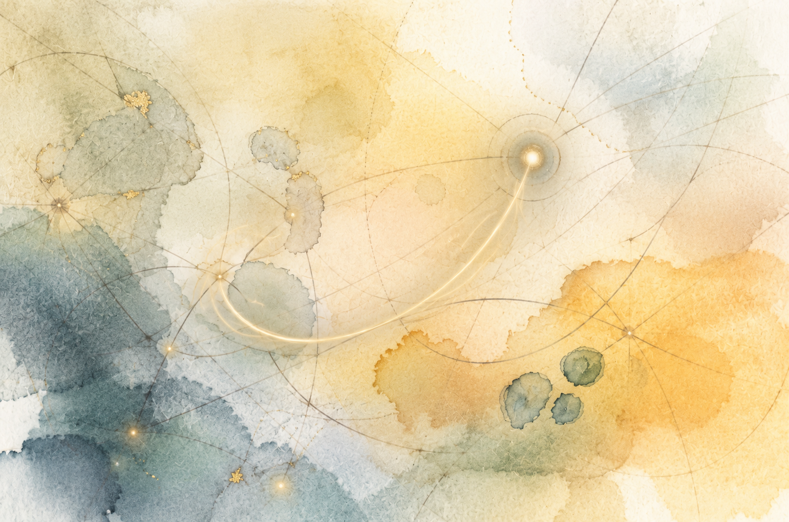

Academic Project
Does SDFT Survive the Jump to Mixture-of-Experts?
A theory-first investigation: derive the bound that decides whether self-distillation's trust-region guarantee survives in a Mixture-of-Experts, then measure directly where a real 16B MoE lands on it.

Academic Project
Foundation Model for Cell Painting (CellPainTR)
A novel contrastive learning framework to explicitly disentangle biological signals from nuisance variables (like batch effects) in high-content imaging data.
Academic Project
Mitigating Racial Bias in Face Age Progression
An investigation into fairness for generative models. We modified a StyleGAN-based age progression model to mitigate racial bias by promoting more equitable transformations across demographics.